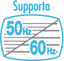

2 |
Precauzioni per l’uso |
 |
❶ Utilizzare il laccetto per telecomando Wii! Assicurarsi che tutti i giocatori che utilizzano il telecomando Wii indossino il laccetto per telecomando Wii (RVL-018 o RVL-018A) facendo scorrere il passante per assicurarlo al polso. Quando si condivide lo stesso telecomando Wii fra più persone, assicurarsi che ognuno usi correttamente il laccetto per telecomando Wii. L'uso del laccetto aiuta a impedire che il telecomando Wii cada o venga scagliato accidentalmente qualora se ne perda il controllo durante il gioco. 

❷ Impugnare saldamente il telecomando Wii e non lasciare mai la presa! Anche se si sta usando il laccetto per telecomando Wii, assicurarsi di non lasciare mai la presa del telecomando Wii e di non compiere movimenti eccessivi. Ad esempio, in Wii Sports™ il modo corretto di lanciare la palla durante una partita a bowling è di rilasciare il pulsante B del telecomando Wii – NON LASCIARE LA PRESA DEL TELECOMANDO Wii. Se le mani diventano umide, interrompere il gioco e asciugarle. Qualora si eseguano movimenti eccessivi e il telecomando Wii sfuggisse di mano, il laccetto per telecomando Wii potrebbe rompersi e si potrebbe perdere il controllo del telecomando stesso. Ciò potrebbe causare danni alle persone o agli oggetti nelle vicinanze. Informazioni aggiuntive sull’uso del laccetto per telecomando Wii L’utilizzo del telecomando Wii durante il gioco può richiedere movimenti rapidi o vigorosi. Utilizzare il laccetto per telecomando Wii per evitare di perdere la presa del telecomando Wii e causare danni al telecomando stesso, alle persone o alle cose che si trovano nelle vicinanze.
Giocare in un ambiente con molto spazio libero! Mentre si usa il telecomando Wii, è probabile che ci si sposti. Quindi, è importante assicurarsi che tutto lo spazio in cui ci si potrebbe muovere sia libero da mobili, oggetti o altre persone, per evitare di urtarli accidentalmente. Inoltre, come indicato nel manuale di istruzioni della console Wii, si consiglia di lasciare almeno 1 metro di distanza fra sé e il televisore.
Queste informazioni sono disponibili all’indirizzo Internet

Molte persone non conoscono la differenza tra 50Hz e 60Hz, ma poiché la maggior parte dei televisori più recenti supporta i 60Hz, vale sicuramente la pena di scoprire se il tuo televisore è compatibile o meno. In parole povere, Hz (Hertz) è l’unità di misura correlata al numero di frame per secondo (fps) che appaiono a schermo. 50Hz producono 25 fps mentre 60Hz circa 30 fps. La differenza potrebbe sembrare minima, ma l’aumento della qualità dell’immagine nel passaggio da 25 a circa 30 fps è piuttosto evidente a schermo. Grazie ai 60Hz otterrai immagini ancora più fluide, minore sfarfallio e velocità ottimale, per una perfetta esperienza di gioco. La modalità di default della console Wii è 50Hz (576i). Per attivare la modalità 60Hz (480i), seleziona questo TIPO DI TV nelle impostazioni della console Wii. Tuttavia, alcuni televisori, in particolare i modelli più vecchi, non supportano tale modalità. Di conseguenza, alcuni giocatori potrebbero riscontrare delle difficoltà nel visualizzare il gioco. Per sapere se il tuo televisore è compatibile con la modalità 60Hz (480i), consulta il manuale di istruzioni dell’apparecchio o rivolgiti alla casa produttrice. Se, dopo aver impostato la modalità 60Hz (480i), lo schermo dovesse apparire nero o presentare immagini distorte, è probabile che l’apparecchio TV non supporti la modalità 60Hz (480i). Per tornare alle impostazioni di default, premi RESET sulla console Wii tenendo premuta la pulsantiera verso il basso. La console Wii si riavvierà in modalità 50Hz (576i). Per maggiori informazioni su come impostare il tipo di TV, consulta il manuale di istruzioni della console Wii: canali e impostazioni. Inoltre, collegando il cavo RGB per Wii (RVL-013) (venduto separatamente) ad un televisore che dispone di un ingresso RGB e della modalità 60Hz (480i) (compatibilità PAL60), o il cavo AV Component per Wii (RVL-011) (venduto separatamente) ad un televisore che dispone di un ingresso Component, puoi ottenere immagini estremamente nitide.

EDTV/HDTV (480p) è una modalità video a scansione progressiva, che permette di godere della migliore qualità grafica possibile. Ciò si traduce in immagini estremamente nitide, velocità ottimale e sfarfallio ridotto al minimo, per una perfetta esperienza di gioco. Nintendo® desidera che gli utenti usufruiscano dei suoi prodotti nelle migliori condizioni. È possibile, tuttavia, che questa modalità non sia utilizzabile: ciò potrebbe dipendere dal televisore o dal cavo. Per sapere se il tuo televisore è compatibile con la modalità EDTV/HDTV (480p) (scansione progressiva), consulta il manuale di istruzioni dell’apparecchio o rivolgiti alla casa produttrice. Prima di attivare questa modalità, assicurati di usare il cavo AV Component per Wii (RVL-011) (venduto separatamente) e che la modalità progressiva sia attivata sul tuo televisore. La modalità di default della console Wii è 50Hz (576i). Per attivare la modalità EDTV/HDTV (480p), seleziona questo TIPO DI TV nelle impostazioni della console Wii. Per maggiori informazioni, consulta il manuale di istruzioni della console Wii: canali e impostazioni. |

 |
 |
 |